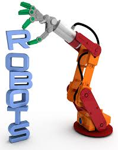

Home | Manufacturers | Famous Robots | Advanced Robots

Robotics is a branch that combines science and engineering, including mechanical engineering, electronics engineering, computer science, software engineering. Many technologies such as design, construction, operation, computer systems, control, sensory feedback, and information processing are used to create machines to mimic human actions.
Robots are mostly used to replace humans in dangerous environments, such as bomb detection and deactivation, manufacturing processes and in general in situations where a human cannot survive. Many robot manufacturers create robots that operate autonomously and replicate human behaviors. These robots replicate speech, cognition, walking, sensing, and belong to a robotics field of inspired robotics.
"The word robotics was derived from the word robot, which was introduced to the public by Czech writer Karel Capek in his play R.U.R. (Rossum's Universal Robots), which was published in 1920. The word robot comes from the Slavic word rabota, which means labour/work. The play begins in a factory that makes artificial people called robots, creatures who can be mistaken for humans very similar to the modern ideas of androids. Karel Capek himself did not coin the word. He wrote a short letter in reference to an etymology in the Oxford English Dictionary in which he named his brother Josef Capek as its actual originator." sourceHumanoid robots is a field of robotics that creates robots to resemble the human body and human behavior. Humanoid Robots have torso, arms, legs, head and Android robots are build to look like humans so they have facial features such as eyes and mouths. The complexity of performing human tasks is immense but they are already perform tasks as reception desks administrators and automotive line production workers. They can also entertain humans by playing music, singing or dancing. Most importantly, humanoid robots, as mentioned above, are used for useful and dangerous missions such as distant space explorations without having the need to return to earth after their mission source